Naruto Classico e Shippuden
19/03/2022
Naruto (ナルト?) é uma série de mangá escrita e ilustrada por Masashi Kishimoto, que conta a história de Naruto Uzumaki, um jovem ninja que constantemente procura por reconhecimento e sonha em se tornar Hokage, o ninja líder de sua vila. A história é dividida em duas partes, a primeira parte se passa nos anos da pré-adolescência de Naruto, e a segunda parte se passa em sua adolescência. A série é baseada em dois mangás one-shots de Kishimoto: Karakuri (1995), e que por causa dele Kishimoto ganhou uma menção honrosa no prêmio Hop Step da Shueisha no ano seguinte, e Naruto (1997).
Postado por Fernando Soethe KesslerDragon ball
19/03/2022
Dragon Ball segue as aventuras do protagonista Goku, um forte garoto ingênuo que, ao se encontrar com a adolescente Bulma, se propõe a reunir as sete desejáveis Esferas do Dragão. Depois ele se torna um estudante de artes marciais com o mestre Kame-Sennin, e um ano depois ele e seu amigo Kuririn entram em um torneio que atrai os lutadores mais poderosos do mundo. Ele então parte sozinho em uma nova busca pelas Esferas do Dragão e acaba enfrentando e destruindo o Exército da Red Ribbon sozinho.
Postado por Fernando Soethe KesslerBleach
19/03/2022
Bleach (ブリーチ Burīchi, lit. "Alvejar"?) é uma série de mangá escrita e ilustrada por Tite Kubo. Bleach segue as aventuras de Ichigo Kurosaki que após ganhar os poderes de um Ceifeiro de Almas, através de uma Ceifeira de Almas, Rukia Kuchiki. Com os seus novos poderes, Ichigo é forçado a assumir o dever de guiar almas boas ao mundo pós-vida à Soul Society, e derrotar os Hollows (monstros espirituais malignos) que tentam devorá-las.
Postado por Fernando Soethe KesslerFullmetal Alchemist
19/03/2022
Fullmetal Alchemist (鋼の錬金術師 Hagane no Renkinjutsushi?, lit. "Alquimista de Aço") é um mangá shōnen escrito e ilustrado por Hiromu Arakawa. Foi serializado na revista mensal japonesa Monthly Shōnen Gangan entre agosto de 2001 e junho de 2010, com os seus 108 capítulos individuais compilados em 27 volumes em formato tankōbon e publicados pela editora Square Enix. O mundo de Fullmetal Alchemist é baseado no período após a Revolução Industrial Europeia. Situado em um universo ficcional em que a alquimia é uma das mais avançadas técnicas científicas conhecidas pelo homem, a história centra-se nos irmãos Edward Elric e Alphonse Elric, que estão procurando a pedra filosofal para restaurar seus corpos após uma desastrosa tentativa de trazer a mãe falecida de volta à vida através da alquimia.
Postado por Fernando Soethe KesslerCode Geass
19/03/2022 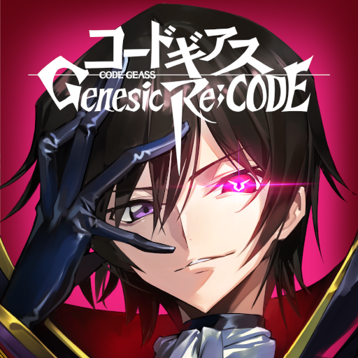A maioria das histórias giram em torno do estudante Lelouch Lamperouge, um jovem príncipe que na sua infância sofreu um atentado terrorista à sua casa, no qual morreu sua mãe e deixou sua irmã impossibilitada de andar e enxergar. Após isso ele teve que se mudar para um lugar chamado Área 11, que corresponde ao Japão depois de dominado pelo Império de Britannia, e recomeçar a sua vida. Alguns anos depois ele encontra uma garota misteriosa chamada C.C. que lhe dá um poder chamado Geass, que lhe permite dar ordens a qualquer ser humano, sendo impossível não obedece-las.
Postado por Fernando Soethe KesslerPokémon
19/03/2022
O anime mostra Ash Ketchum e seu Pikachu em sua aventura para se tornar um mestre Pokémon. Seus amigos Brock e Misty o acompanham em grande parte dessa jornada. Outros protagonistas incluem Tracey, May e Max, Dawn, Iris e Cilan, Serena, Clemont e Bonnie. Durante toda a série há a presença da Equipe Rocket. Seus três integrantes que mais aparecem são Jessie, James e Meowth, que têm como objetivo roubar Pokémon, em especial o Pikachu de Ash. Ash vai passando por várias regiões ao longo de sua jornada, como a de Kanto, Johto, Hoenn, Sinnoh, Unova, Kalos e atualmente Alola. E assim Ash junto aos seus amigos exploram esse maravilhoso mundo Pokémon cheio de aventuras e novas espécies de Pokémon.
Postado por Fernando Soethe KesslerDigimon
19/03/2022 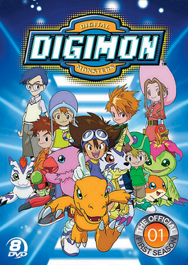Digimon (デジモン Dejimon?, também chamado de Digital Monsters e estilizado como DIGIMON) é uma franquia de mídia japonesa, distribuída pela Bandai e criada por Akiyoshi Hongo. A história da franquia é sobre umas criaturas digitais homônimas, habitantes de um mundo digital (nomeado digimundo). Esse mundo é feito inteiramente de dados, paralelo ao mundo real e pode ser acessado por redes ou portais intangíveis e conexões de internet.
Postado por Fernando Soethe KesslerInazuma Eleven
19/03/2022
Endou Mamoru (Satoru Endo na versão brasileira e Mark Evans na versão portuguesa), é um goleiro muito talentoso, neto de Daisuke Endo (David Evans na versão portuguesa), um dos melhores goleiros no Japão que morreu antes de ele nascer. Endou montava um time de futebol em sua escola, a Raimon para que assim pudessem entrar no Campeonato Futebol Fronteira (Campeonato Football Frontier na versão portuguesa) até um misterioso atacante chamado Shuya Goenji (Axel Blaze na versão portuguesa) se mudar para a sua escola. Goenji se recusa a entrar no time de Endou, pois havia deixado o futebol após sua irmã mais nova sofrer um acidente durante um jogo.
Postado por Fernando Soethe KesslerSailor Moon
19/03/2022 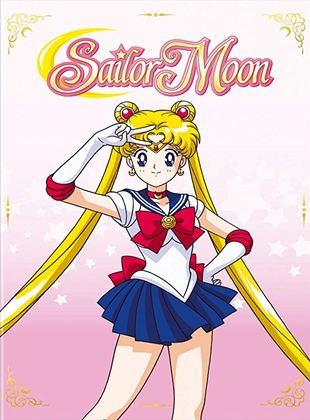Sailor Moon conta a história de Usagi Tsukino, uma garota normal e inocente de 14 anos — pelo menos, é isso que ela pensa — que um dia encontra Luna, uma gata falante que revela a identidade de Usagi como "Sailor Moon", uma guerreira mágica destinada a salvar a Terra das forças do mal. Luna, então, dá a ela tarefas, como a de encontrar a Princesa da Lua e a de proteger a Terra de diversos antagonistas, começando com o Dark Kingdom (Reino Sombrio), que há um tempo destruiu o Reino da Lua, o Silver Millenium (Milênio de Prata). Antes da série começar, o inimigo atacou o Reino da Lua, o que obrigou a Rainha Serenity a mandar sua filha, a Princesa Serenity e suas guardiãs, além dos gatos Luna e Artemis, seus assessores e o Príncipe do Reino da Terra, Endymion para o futuro para renascerem. Junto com suas guardiãs — a inteligente Sailor Mercury, a vidente Sailor Mars, a delicada, porém forte Sailor Jupiter e a alegre Sailor Venus — a Princesa Serenity luta contra o mal e, com o tempo, encontra-se com o Tuxedo Mask (Tuxedo Kamen no original), o seu verdadeiro amor.
Postado por Fernando Soethe KesslerOs Cavaleiros do Zodiaco
19/03/2022 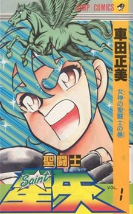O enredo se concentra em um órfão chamado Seiya, forçado a ir ao Santuário na Grécia para obter a Armadura de Bronze de Pégaso, uma veste usada pelos 88 guerreiros da deusa grega Athena, conhecidos como Cavaleiros.Após despertar o poder dos Cavaleiros, que é uma essência espiritual chamada de Cosmo (que se originou com o Big Bang), Seiya rapidamente se torna o Cavaleiro de Pégaso e retorna ao Japão para encontrar sua irmã mais velha, pois esta havia desaparecido no mesmo dia em que ele foi ao Santuário. Saori Kido - a neta do homem responsável por enviar os órfãos para o treinamento - fez um trato com Seiya, pedindo para que participe de um torneio chamado de Guerra Galática, onde o vencedor dentre os cavaleiros de bronze receberia a Armadura de Ouro de Sagitário. O trato era que se Seiya vencesse o torneio, Saori ajudaria na busca por sua irmã.
Postado por Fernando Soethe KesslerKimetsu no Yaiba
19/03/2022 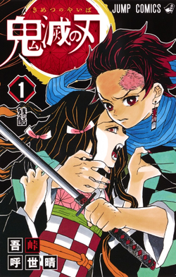Ambientada no Japão durante o Período Taishō (1912-1926), a história gira ao entorno de Tanjirō Kamado, um garoto bondoso e inteligente que vive junto com sua mãe e seus irmãos, ganhando dinheiro vendendo carvão, assim como seu falecido pai. Certo dia, ao voltar para casa após ter ido a uma cidade vender carvão, Tanjiro descobre que toda sua família foi atacada por onis, sendo que uma de suas irmãs, Nezuko, é a única que sobreviveu ao ataque. Nezuko então passa a ser um oni, mas ela surpreendentemente ainda demonstra sinais de emoções e pensamentos humanos. Tanjirō decide então se tornar um caçador de onis, e com a ajuda de Nezuko, passa a sair em jornadas pelo Japão a fim de impedir que a mesma tragédia que afetou sua família aconteça com outras pessoas, enquanto que ele busca uma maneira de tornar Nezuko humana novamente.
Postado por Fernando Soethe KesslerShingeki no Kyojin
19/03/2022
Shingeki no Kyojin (進撃の巨人?) também conhecido como Attack on Titan, é uma série de mangá escrita e ilustrada por Hajime Isayama. É ambientado em um mundo onde a humanidade vive dentro de cidades cercadas por três enormes muralhas que os protegem dos gigantescos humanóides devoradores de humanos chamados de Titãs; a história segue Eren Yeager, que jura exterminar os Titãs após um Titã causar a destruição de sua cidade natal e a morte de sua mãe. Shingeki no Kyojin teve seus capítulos publicados na revista mensal de mangás shōnen Bessatsu Shōnen Magazine da editora Kodansha de setembro de 2009 até abril de 2021, com os seus capítulos compilados em 34 volumes tankōbon.
Postado por Fernando Soethe KesslerOverlord
19/03/2022 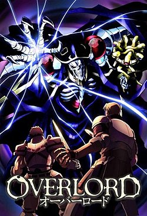Yggdrasil é um popular jogo online que acaba sendo encerrado sem alardes certo dia. No entanto, Momonga decide não sair do jogo. Então ele é transformado num esqueleto como “o mago mais poderoso”. O mundo continua a mudar, com NPCs começando a ter catacterísticas de jogadores. Como não tem família, amigos ou lugar na sociedade real, o jovem Momonga decide lutar para dominar o novo mundo que o jogo se tornou.
Postado por Fernando Soethe KesslerBoku no Hero
19/03/2022
A história segue Izuku Midoriya, um menino que nasceu sem individualidade em mundo que é normal tê-las, mas mesmo assim sonha em se tornar um super-herói.Cap. 1 Após ajudar o maior herói do mundo, que fica fraco depois de um tempo por causa de um ferimento, a capturar um vilão, este compartilha os seus poderes, o One for All, com Izuku depois de reconhecer o seu valor e o ajuda a se matricular em uma escola para heróis em formação
Postado por Fernando Soethe KesslerDeath Note
19/03/2022
Light Yagami é um estudante da cidade de Tóquio, no Japão. Um dia, sua vida sofre uma mudança radical, quando ele está entediado, encontra um estranho caderno sobrenatural chamado "Death Note", caído no chão. Dentro do caderno havia instruções sobre sua utilização, onde dizia que se escrevesse o nome de uma pessoa e visualizasse mentalmente o rosto desta, ela morreria de um ataque cardíaco em 40 segundos (se acaso a morte não for especificada). No início, Light desconfiava da autenticidade do caderno, mas depois de testá-lo em duas ocasiões, ele percebe que seu poder era verdadeiro. Depois de cinco dias, ele é visitado pelo verdadeiro proprietário do Death Note, um shinigami chamado Ryuk, que conta que ele tinha deixado cair o caderno na Terra porque estava entediado, e Light, então, lhe diz que o seu objetivo era matar todos os criminosos, a fim de purificar o mundo do mal e tornar-se o "deus do novo mundo".
Postado por Fernando Soethe KesslerJujutsu Kaisen
19/03/2022 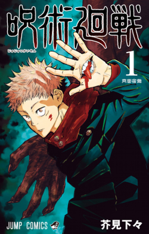Yuuji Itadori é um estudante do ensino médio que vive em Sendai com seu avô. Ele evita regularmente a equipe de pista devido à sua aversão ao atletismo, apesar de seu talento inato para o esporte. Em vez disso, ele decide ingressar no Clube de Pesquisa Oculta, onde pode relaxar e sair com seus veteranos, e deixar a escola às 17h para visitar seu avô no hospital. Enquanto ele está no leito de morte, seu avô envia duas mensagens poderosas dentro de Yuuji - "sempre ajude as pessoas" e "morra cercado por uma multidão".Cap. 1 Após a morte de seu avô, Yuuji interpreta essas mensagens como uma afirmação - todo mundo merece "uma morte adequada", ele então é confrontado por Megumi Fushiguro, um xamã (巫? Shaman) que o informa de um talismã de alto grau amaldiçoado em sua escola com o qual Yuuji recentemente entrou em contato. Seus amigos no Clube Oculto abriram o talismã, um dedo podre, que atraiu Maldições para a escola, criaturas provocadas por emoções negativas e fortalecidas pelo consumo de poderes mágicos presentes em xamãs ou em tais encantos. Incapaz de derrotar as Maldições devido à sua falta de poderes mágicos, Yuuji engole o dedo para proteger Megumi e seus amigos e se torna o anfitrião de Sukuna, uma poderosa Maldição.Cap. 1 Devido à natureza maligna de Sukuna, todos os xamãs devem exorcizá-lo imediatamente. No entanto, apesar de possuído, Yuuji ainda é capaz de manter o controle sobre seu corpo em sua maior parte. Vendo isso, Satoru Gojou, professor de Megumi, decide levá-lo ao Colégio Técnico Metropolitano de Tóquio para propor um plano a seus superiores - adiar a sentença de morte de Yuuji até que ele consuma todos os dedos de Sukuna, permitindo que eles o matem de uma vez por todas
Postado por Fernando Soethe KesslerTokyo Ghoul
19/03/2022 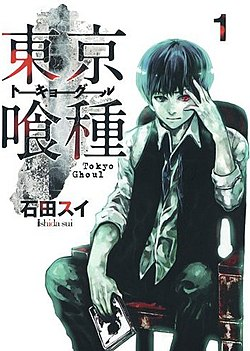A história de Tokyo Ghoul gira em torno de Ken Kaneki, um estudante que mal sobrevive a um encontro mortal com Rize Kamishiro, uma mulher que se revela um ghoul; ghoul são criaturas semelhantes a humanos que caçam e devoram carne humana, com essa revelação Rize ataca Kaneki que é ferido gravemente, tentando fugir desesperadamente Rize o encurrala até que vários canos de metal caem em Rize aparentemente a matando, logo após isso Kaneki desmaia devido aos ferimentos e é levado para o hospital em estado critico. Depois de recuperado, ele descobre que, de alguma forma, foi submetido a uma cirurgia que o transformou em meio-ghoul, e que, assim como eles, deverá consumir carne humana para poder sobreviver. Sem ninguém pra recorrer, ele é levado pelo gerente(Kuzen) de uma cafeteria chamada "Anteiku", onde lhe ensinam a viver como meio-humano e meio-ghoul e a interagir com a sociedade dos ghouls e as suas facções, enquanto se esforça para conviver com os humanos.
Postado por Fernando Soethe KesslerNanatsu no Taizai
19/03/2022
Nanatsu no Taizai (七つの大罪? lit. "Sete Grandes Pecados", 漢字翻譯: 7個大罪), é uma série de mangá escrito e ilustrado por Nakaba Suzuki. Foi serializado na revista Weekly Shōnen Magazine da Kodansha de outubro de 2012 até março de 2020, com os capítulos coletados em quarenta e um volumes de tankōbon. O mangá apresenta um cenário semelhante ao da Idade Média Europeia, com um grupo principal de cavaleiros que representam os sete pecados capitais. Tendo como o principal personagem do mangá o Meliodas , o líder dos Sete Pecados Capitais, carregando o título de Pecado da Ira do Dragão. Ele é o proprietário do renomado bar Chapéu de Javali, e o principal protagonista da série. O seu Tesouro Sagrado é a Espada Demônio Lostvayne e seu poder é o Full Counter. Ele também já usou o Mandamento do Amor e é o antigo líder dos Dez Mandamentos, um antigo membro do Stigma, e o filho mais velho do Rei Demônio.
Postado por Fernando Soethe KesslerSword art Online
19/03/2022 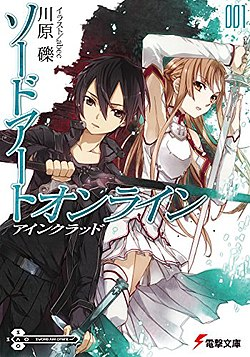Em 2022, um jogo de realidade virtual Massively Multiplayer Online Role-Playing Game (VRMMORPG) chamado Sword Art Online foi lançado. Com o Nerve Gear, um capacete que estimula os cinco sentidos do usuário através de seu cérebro, os jogadores podem controlar seus personagens no jogo com suas mentes. Tanto o jogo como o NerveGear foram criados por Kayaba Akihiko.Em 6 de novembro de 2022, 10.000 jogadores entraram pela primeira vez em SAO e, depois, descobriram que são incapazes de sair. Kayaba na forma de um avatar aparece e diz aos jogadores que eles devem vencer todos os 100 andares de Aincrad, um castelo de aço que é o cenário de SAO, se quiserem sair do jogo. Aqueles que sofrem mortes no jogo ou tentam forçosamente retirar o NerveGear fora do jogo sofrerão mortes na vida real. Este também faz os jogadores revelar seu real rosto, mudando seus avatares de jogo.Um dos jogadores chamado Kazuto Kirigaya, cujo avatar Kirito é um dos 1.000 jogadores da fase fechada beta. Como já conhecia o jogo, ele sentiu que poderia finalizá-lo facilmente. Dessa forma, decidiu vencê-lo sozinho. Este também possui contato com Ryōtarō Tsuboi, cujo avatar de Klein e traços de um samurai, um novato de SAO e um bom amigo para Kazuto e Andrew Gilbert Mills, cujo avatar de Agil, um homem muito grande e dono de uma taverna que vende armas para os players, como também deixa o lugar para se aventurar nas quests. Kazuto fez parte de um grupo chamdo Gatos Pretos Iluminados Pela Lua, mas este grupo foi eliminado num lugar onde cristais de telepote não funcionariam até Sachi, que passou da gota para Kazuto. Desde então Kazuto tem ajudado outros players, mas como jogador solo para não ter mais perdas. Ele era conhecido como Beat ou Espadachim Negro.
Postado por Fernando Soethe KesslerOne piece
19/03/2022
A série centra-se em Monkey D. Luffy, um jovem que, inspirado por seu ídolo de infância e poderoso pirata Shanks, "o Ruivo", sai em uma jornada do mar East Blue para encontrar o famoso tesouro One Piece e proclamar-se o Rei dos Piratas. Em um esforço para organizar sua própria tripulação, os Piratas do Chapéu de Palha (麦わら海賊団, Mugiwara Kaizoku-dan), Luffy salva e faz amizade com um espadachim chamado Roronoa Zoro, que se torna seu braço direito na busca pelo One Piece. Eles estão acompanhados em sua jornada por Nami, uma navegadora e ladra; Usopp, um atirador e um mentiroso; e Vinsmoke Sanji, um chef de cozinha mulherengo. Eles adquirem um navio chamado Going Merry (ゴーイング・メリー号, Gōingu Merī-gō) e se envolvem em confrontos com famosos piratas do East Blue. Conforme Luffy e sua tripulação partem para novas aventuras, surgem novos membros na tripulação, como Tony Tony Chopper, um médico e uma rena antropomórfica; Nico Robin, uma arqueóloga e ex-assassina; Franky, um carpinteiro ciborgue; Brook, um esqueleto músico e espadachim; e Jimbei, um tritão homem-peixe e ex-membro dos Sete Corsários. Uma vez que o Going Merry fica seriamente danificado, os Piratas do Chapéu de Palha adquirem um novo navio chamado Thousand Sunny (サウザンドサニー号, Sauzando Sanī-gō). Juntos, eles encontram outros piratas, caçadores de recompensas, organizações criminosas, revolucionários, agentes secretos e soldados do corrupto Governo Mundial, e vários outros amigos e inimigos, enquanto navegam nos mares em busca
Postado por Fernando Soethe KesslerNoragami
19/03/2022 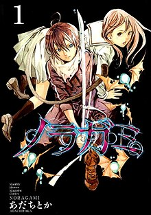Yato é um deus menor, cujo sonho é ter um santuário e muitos seguidores para adorá-lo. Entretanto, ele é um deus quase desconhecido, e sua única parceira que o ajudava a realizar os desejos dos humanos decide deixá-lo e passa a ajudar outro deus. Enquanto ele tentava realizar um desejo sozinho, Iki Hiyori, uma comum estudante, salva-o de ser atropelado, mas sofre o acidente no lugar dele. Isso faz com que a garota passe a ter um certo problema e fica presa a Yato até que seu problema seja resolvido. Junto com Hiyori e seu novo parceiro, o deus Yato tentará ganhar fama para ser um deus reconhecido.
Postado por Fernando Soethe KesslerHaikyu
19/03/2022 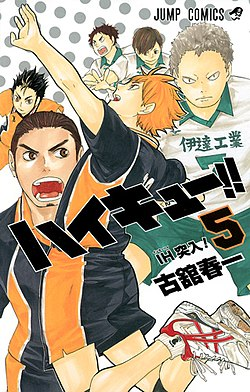O estudante do ensino médio Shōyō Hinata se apega ao voleibol depois de ver um jogo do campeonato nacional na televisão. Embora não seja muito alto, ele se determina a seguir os passos do ídolo do campeonato, apelidado de "Pequeno Gigante", depois de ver seus jogos. Ele cria um clube de voleibol e começa a praticar sozinho. Eventualmente, os outros cinco membros juntam-se à equipa no seu último ano do ensino fundamental, mas são derrotados em seu primeiro torneio depois de serem desafiados pela equipa favorita do campeonato, que inclui o chamado "Rei da Corte" Tobio Kageyama, na primeira rodada. Embora a equipa de Shōyō sofra uma derrota miserável, ele promete eventualmente superar Tobio e derrotá-lo. Mas quando ele entra no ensino médio logo descobre que estão no mesmo time de vôlei.
Postado por Fernando Soethe KesslerBlue Exorcist
19/03/2022 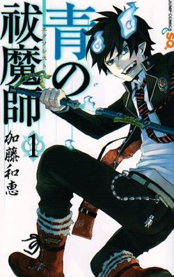O mundo em Blue Exorcist consiste em duas dimensões, adjuntas uma a outra como um espelho e seu reflexo. Uma é o mundo onde os humanos vivem, Assiah. A outra é o mundo dos demônios, Gehenna. Originalmente, uma viagem entre os mundos, ou mesmo um contato entre eles, é impossível. Entretanto, qualquer demônio é capaz de passar à dimensão de Assiah atráves da possessão de um ser vivente na mesmaMesmo assim na história existem demônios vagando entre os humanos e só quem pode ver é quem já teve um contato direto com um demônio de qualquer nívelEm contrapartida, existem aqueles chamados de exorcistas, pessoas que treinam para destruir demônios que agem de maneira prejudicial em Assiah. Com mais de dois mil anos de existência, esse grupo possui diversas filiais em todo o mundo, estando secretamente sob comando do próprio Vaticano e agindo de maneira subterfugiosa às massas.Satã é o deus dos demônios em Gehenna e um ser de poder ilimitado. Há, contudo, uma única coisa que ele não possui: um corpo no mundo dos humanos capaz de abrigá-lo. Por esse motivo, ele criou Okumura Rin, seu filho gerado por uma humana. Rin tem um irmão gêmeo, Okumura Yukio é muito inteligente e a princípio acredita-se que ele não tem nenhum poder demoníaco o que muda mais tarde, e ele desde pequeno sempre soube sobre os demônios diferente de Rin, e prometeu proteger o irmão acima de tudo e por isso se torna exorcista com apenas 15 anos. Mas não está nos planos de Rin ser manipulado por seu pai. Ele é um jovem rapaz humano que leva uma vida normal em Assiah, até o dia em que descobre ser um híbrido meio humano meio demônio, filho de Satã. Agora, no intuito de não machucar ou matar mais pessoas, ele planeja torna-se um exorcista a fim de destruir seu próprio pai .
Postado por Fernando Soethe KesslerBlack Clover
19/03/2022
Asta e Yuno são orfãos que foram criados juntos numa igreja localizada no interior do reino de Clover. Num mundo onde todos possuem poderes mágicos (魔力 Maryoku?), Asta nasceu sem possuí-los. Em contrapartida, Yuno nasceu como um prodígio com poder mágico imenso e com o talento para controlá-lo. A história acompanha os dois garotos que competem entre si para se tornar o Rei Mago, o cavaleiro mágico mais forte do reino de Clover. Mesmo sem magia Asta tenta ser um cavaleiro mágico, assim sua jornada começa quando obtém o misterioso poder "anti-magia", que pode anular todas as magias. Assim Asta, com sua anti-magia e força física, e Yuno, com seus poderes mágicos e talento, começam a jornada.
Postado por Fernando Soethe KesslerThe Promissed Neverland
19/03/2022
Emma é uma órfã que vive em um orfanato chamado Grace Field House junto com seus outros irmãos adotivos. Dois deles são Norman e Ray, que, juntamente com a Emma, são os mais velhos e conseguem as pontuações mais altas em testes diários que eles têm que realizar. Emma observa que, enquanto eles são capazes de fazer o que querem, não podem sair do orfanato para irem ao mundo exterior.Uma noite, a menina Conny, uma das crianças órfãs, é enviada para ser adotada, porém Emma percebe que ela deixou seu coelho de pelúcia Bernie para trás. Junto com Norman, ela vai atrás de Conny. No entanto, eles ficam chocados ao descobrirem que ela está morta e a casa onde vivem é na verdade uma fazenda onde eles são criados e colhidos para se tornarem alimentos de criaturas demoníacas. Para piorar a situação, Isabella, a cuidadora das crianças, (chamada carinhosamente de "Mama") é aliada destas criaturas, além disso, os demônios exigem que Norman, Ray, e Emma sejam os próximos, por terem as maiores pontuações. Esta notícia faz com que eles prometam fugir junto com todos os outros irmãos do orfanato.
Postado por Fernando Soethe KesslerOwari no Seraph
19/03/2022 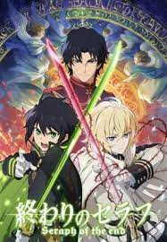Um dia, um vírus misterioso apareceu na Terra e matou todos os seres humanos infectados com idade superior a 13 anos. Ao mesmo tempo, vampiros surgiram das trevas do mundo, escravizaram a humanidade e os trataram como gado. Hyakuya Yuuichirou, um jovem rapaz que sobreviveu junto com outros órfãos, sonha grande, sonha em matar vampiros, sonha em matar todos eles. Após escapar do cativeiro Yuuichirou se tornou membro da Companhia Demônio da Lua, uma unidade do exército japonês dedicada a caçar os vampiros, Yuuichirou dedica sua vida para destruir os vampiros e buscar vingança contra eles por terem assassinado a sua "família".
Postado por Fernando Soethe KesslerJojo no Kimyo na Boken
19/03/2022 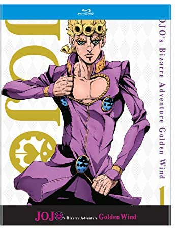JoJo's conta a história da família Joestar, uma família cujos vários membros descobrem que estão destinados a derrubar inimigos sobrenaturais, tais como Dio Brando um vampiro semi-imortal, Yoshikage Kira um serial killer e Diavolo um líder de gangue usando poderes únicos que possuem. Sendo dividido em 8 partes únicas, cada uma seguindo a história de um membro da família Joestar, que inevitavelmente tem um nome que pode ser abreviado para o titular "JoJo". As primeiras seis partes da série ocorrem em uma única continuidade, enquanto as partes 7 e 8 ocorrem em uma continuidade alternativa.
Postado por Fernando Soethe KesslerKuroko no Basket
19/03/2022 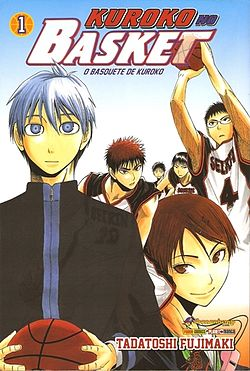O time de basquete da escola secundária Teiko que subiu para distinção, demolindo toda a concorrência, tem na equipe cinco jogadores prodígios conhecidos como a “Geração dos Milagres”. Após o término do ensino fundamental, essas cinco estrelas se matricularam em colégios diferentes. Cada colégio possuía agora uma forte equipe de basquete. No entanto, um fato que poucos sabiam é que havia outro jogador da “Geração dos Milagres”, um sexto “jogador fantasma”. Este jogador misterioso é agora um calouro na Seirin High, uma escola nova, com sua pouco conhecida equipe de basquete. Agora, Kuroko Tetsuya, o sexto membro da “Geração dos Milagres”, e Kagami Taiga, um jogador de talento natural, que passou a maior parte do ensino médio nos Estados Unidos, têm o objetivo de trazer Seirin ao topo do Japão, desafiando os antigos companheiros de Kuroko, um a um.
Postado por Fernando Soethe KesslerHunterxHunter
19/03/2022 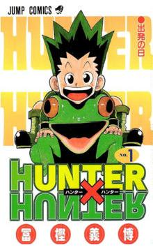Doze anos antes do início da história, Ging Freecss deixou seu filho Gon nas mãos de sua tia Mito na Ilha da Baleia. Gon, que sempre acreditou que seus pais tinham morrido, descobre um dia graças ao aprendiz de seu pai, Kite, que ele ainda está vivo e se tornou um dos melhores Hunter,indivíduos de elite e licenciados para rastrear tesouros secretos, animais exóticos e até mesmo outros indivíduos. Motivado por esta revelação, Gon decide sair de casa e entrar no Exame Hunter, que tem uma série de desafios que buscam testar suas habilidades, como de sobrevivência e trabalho em equipe de seus participantes.Durante o exame, Gon, conhece e faz amizade com outros três participantes: Kurapika, o último membro do clã Kurata, que quer se tornar um Hunter, a fim de vingar sua família e recuperar os olhos escarlate que foram roubados de seus corpos por um grupo de mercenários conhecidos como Gen'ei Ryodan; Leorio, que só quer ser um Hunter para poder pagar seus estudos de medicina; e Killua Zoldyck, um jovem que deixou sua antiga vida como um membro da família mais famosa de assassinos. Assim, este pequeno grupo de amigos embarcam em uma série de aventuras com cada um tentando conquistar seus objetivos.
Postado por Fernando Soethe KesslerRurouni Kenshin
19/03/2022 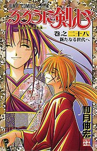Durante 10 anos Kenshin vagou pelo Japão até encontrar abrigo no Dojo Kamiya, onde a jovem Kaoru Kamiya lecionava kendo no estilo Kamiya Kashin (Espada para a Vida). A errante caminhada do jovem ronin tinha um propósito: A expiação pelas inúmeras mortes que causara durante o Bakumatsu (fim do bakufu/shogunato) quando era um hitokiri (assassino retalhador) a serviço da Ishin Shishi (monarquistas que desejavam a restauração do governo para as mãos do imperador) do feudo de Choushuu. Nessa época, Kenshin ficou conhecido como "Hitokiri Battousai" (人斬り抜刀斎 - Battousai, o retalhador) por sua grande habilidade com o Battoujutsu. Mesmo com a vitória dos monarquistas que culminou na derrubada do Xogunato Tokugawa, dando origem a Era Meiji, Kenshin, arrependido pelas inúmeras vidas que tirou, decide nunca mais matar. Mesmo terminando sua longa jornada, o ex-hitokiri terá de brandir novamente sua Sakabatō (espada de gume invertido) para enfrentar novos e velhos inimigos. Entre as classes de guerreiros do Japão feudal, Kenshin ficaria melhor definido como um ronin ou "rurouni" que segundo Watsuki, significa "andarilho" (a palavra "rurouni" não existe propriamente em japonês; na verdade é um trocadilho do autor com a palavra ronin), portanto o título da série poderia ser traduzido como "Kenshin, o andarilho".
Postado por Fernando Soethe KesslerYu Yu Hakusho
19/03/2022 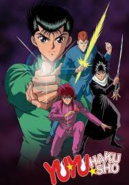Yu Yu Hakusho segue a história de Yusuke Urameshi, um delinquente que, num ato incaracterístico de altruísmo, é atropelado por um carro e morto em uma tentativa de salvar um garotinho, empurrando-o para fora do caminho. Seu fantasma é recebido por Botan, que se apresenta como a navegante do rio Sanzu, que transporta as almas para o submundo ou Mundo Espiritual (霊界 Reikai?), onde elas podem ser julgadas pela vida após a morte. Botan informa Yusuke que seu ato pegou até mesmo o submundo de surpresa e que ainda não havia um lugar feito para ele seja no céu ou inferno. Assim, Koenma, filho do governante do submundo Enma, oferece a Yusuke uma chance de retornar ao seu corpo através de uma série de testes. Yusuke sucede com a ajuda de seus amigos Keiko Yukimura e Kazuma Kuwabara. Depois de voltar à vida, Koenma concede a Yusuke o título de "Detetive Sobrenatural" (霊界探偵 Reikai Tantei?, lit. "Detetive do mundo espiritual"), encarregando-o de investigar atividades sobrenaturais dentro do mundo humano (人間界 Ningen Kai?). Em seu primeiro caso, Yusuke deve recuperar três tesouros que foram roubados do submundo por três demônios: Hiei, Kurama e Gouki. Yusuke recolhe os três tesouros com a ajuda de sua nova técnica, o "Leigun", um tiro de aura ou Reiki (霊気? lit. "Energia espiritual), disparado mentalmente através de seu dedo indicador.
Postado por Fernando Soethe KesslerBerserk
19/03/2022 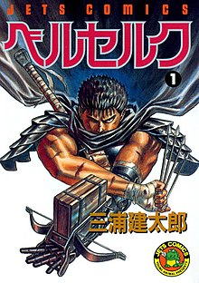Guts é um guerreiro errante e antigo Comandante da Tropa de Assalto da renomada unidade mercenária conhecida como o Bando do Falcão. Ele, agora, caça criaturas demoníacas chamadas Apóstolos, humanos que fizeram um pacto com um grupo de arqui demônios conhecidos como "A Mão de Deus" que exige o sacrifício de qualquer coisa ou pessoa que for mais achegado a eles em troca de um poder sobrenatural incrível. O próprio Guts carrega uma Marca do Sacrifício vinda deste mesmo ritual; ele é uma das poucas pessoas que sobreviveram a esse ritual, mas, ainda assim, demônios são atraídos incessantemente até ele onde quer que vá, com a Marca se tornando mais dolorosa e sangrenta conforme a proximidade e o poder de seus adversários.
Postado por Fernando Soethe KesslerGintama
19/03/2022 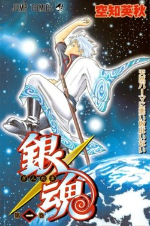A história de Gintama ocorre num período alternativo de Edo tardio, onde a humanidade foi conquistada por alienígenas chamados "Amanto" (天人 "Pessoas do Céu"?). Os samurais do Japão lutaram contra os invasores, mas, depois de derrotá-los, os Amantos colocaram uma lei de proibição na utilização de espadas. A trama é focada nas aventuras de um samurai excêntrico conhecido como Sakata Gintoki (também conhecido como Odd Jobs Gin), que ajuda o adolescente Shimura Shinpachi a salvar sua irmã de um grupo de alienígenas que querem torná-la parte de um bordel. Impressionado com Gintoki, Shinpachi se torna seu aprendiz e trabalha com ele como um freelancer para pagar o aluguel mensal onde vive Gintoki. Mais tarde, os dois resgatam uma adolescente alienígena chamada Kagura de um grupo Yakuza que queriam usar sua força sobre-humana para matar pessoas. Depois disso, Kagura decide juntar-se a Gintoki e Shinpachi para trabalhar por conta própria, e os três começam a ser chamarem "Yorozuya" (万事 屋? "Fazemos Tudo"). Às vezes, ao fazer o seu trabalho se deparam muitas vezes com a força policial Shinsengumi, que muitas vezes acabam se aliando a eles. Também, no desenvolvimento da série aparecem múltiplos personagens, como o terrorista Kotaro Katsura que mantém um relacionamento amigável com Gintoki e seus amigos, apesar de sua ambição de destruir o xogum, e Shinsuke Takasugi, que atua como um antagonista principal ao longo da série e que também quer destruir o xogum de uma forma mais violenta do que Kotaro.
Postado por Fernando Soethe KesslerOne Punch Man
19/03/2022
A história se passa em cidades japonesas fictícias, especialmente na chamada de Cidade Z, onde aparecem com grande frequência seres monstruosos que causam vários desastres. Após treinar durante três anos, Saitama, o protagonista, se tornou um herói não oficial incrivelmente forte que derrota monstros ou outros vilões com um único soco. No entanto, devido à sua força esmagadora, Saitama tornou-se entediado e está constantemente tentando encontrar adversários mais fortes que podem lutar de igual contra ele.Em seus combates, ele conhece novos amigos, inimigos e o seu próprio discípulo, o ciborgue Genos, onde posteriormente os dois entram na Associação dos Heróis, a fim de se tornarem heróis oficiais e ganharem reconhecimento e respeito por todos os seus esforços para manter as cidades a salvo. Apesar de derrotar seres extremamente fortes que até mesmo os maiores heróis da Associação são incapazes de derrotar, Saitama é desrespeitado devido a sua aparência física simples, e alguns o acusam de ser um herói falsificado. Apenas um pequeno número de indivíduos reconhecem seu incrível talento e humildade com os outros.
Postado por Fernando Soethe KesslerBaki O Campeao
19/03/2022 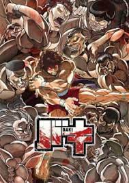A série conta a saga do jovem Baki Hanma que ambiciona ser mais forte que seu pai. O grande problema é que seu pai, Yujiro Hanma, é o ser vivo mais forte do planeta. Para tal enfrenta os treinos mais duros que existem, para além de enfrentar todo o tipo de adversários em que cada um deles tem um estilo de luta muito peculiar.Na verdade, o que ninguém sabe é que Baki não quer ficar mais forte por ambição própria. O que ele quer é o amor de sua mãe. Sua mãe, a qual tem uma enorme paixão pelo poder, despreza o filho por achá-lo fraco e só tem olhares para o pai do garoto, Yujiro Hanma. Por isso, Baki tenta sempre vencer o pai para que sua mãe também o ame. Tendo essa motivação enorme, ele nunca desiste de ficar mais forte.
Postado por Fernando Soethe KesslerViolet Evergarden
19/03/2022
A história centra-se nas Bonecas Autômatas (português europeu) ou Autômatas (português brasileiro) de Automemórias (自動手記人形 Jidō Shuki Ningyō?), que foram inicialmente criadas por um cientista conhecido por Dr. Orland para ajudar a sua esposa cega Mollie a escrever os seus romances. Posteriormente foram alugadas para outras pessoas que precisavam dos seus serviços. Na atualidade, o termo refere-se à indústria de escreventes. Enquanto que a função inicial das Bonecas Autónomas de Automemórias era apenas gerar vozes para o texto, um segundo grupo de pessoas criou uma companhia para alugar mulheres que realizam as mesmas funções das Bonecas Autónomas de Automemórias, e também as tarefas militares.
Postado por Fernando Soethe KesslerSolo Leveling
19/03/2022
Um grande fenômeno um dia aconteceu, portais desconhecidos surgiram ligando o mundo que conhecemos a uma realidade totalmente extraordinária de monstros e seres fantasiosos, cujo único objetivo era matar humanos. Em resposta a esse novo perigo, surgiram os “Caçadores”, humanos que foram “despertados” e ganharam poderes capazes de bater de frente com essas criaturas. Dentre eles, há um conhecido por ser “a pior arma da humanidade”, Sung Jin-woo. Mas sua sorte irá mudar quando uma incursão que deveria ser fácil se torna um verdadeiro pesadelo.
Postado por Fernando Soethe KesslerTokyo Revengers
19/03/2022
Takemichi Hanagaki, um freeter de 26 anos sem esperança na vida, descobre um dia que sua ex-namorada no colégio, Hinata Tachibana, assim como seu irmão mais novo Naoto, são mortos pela Gangue Tokyo Manji. Quando Takemichi é empurrado na frente de um trem, ele viaja no tempo para exatamente 12 anos atrás, em 2005. Takemichi revive seus anos de ensino médio, e depois de revelar a Naoto que Hinata vai morrer, Takemichi é repentinamente transportado de volta ao presente, criando um paradoxo de tempo onde Naoto sobrevive e agora é um detetive. Naoto deduz que Takemichi é capaz de viajar 12 anos no passado quando eles dão as mãos, e usando o conhecimento do passado, Takemichi jura salvar Hinata.
Postado por Fernando Soethe KesslerRe:Zero kara Hajimeru Isekai Seikatsu
19/03/2022
Re:Zero kara Hajimeru Isekai Seikatsu (Re:ゼロから始める異世界生活?) (no Brasil: Re:Zero – Começando uma Vida em Outro Mundo) é uma série de light novel escrita por Tappei Nagatsuki e ilustrada por Shinichirou Otsuka. A história se centra em Subaru Natsuki, um hikikomori que de repente se vê transportado para outro mundo enquanto voltava para casa após sair de uma loja de conveniência. A série foi inicialmente serializada no website Shōsetsuka ni Narō a partir de 2012. Vinte e nove volumes foram publicados pela editora Media Factory desde 25 de janeiro de 2014, com a impressão da MF Bunko J.
Postado por Fernando Soethe KesslerYu-Gi-Oh!
19/03/2022
Yu-Gi-Oh! narra a história de Yugi Muto, um garoto tímido que ama todos os tipos de jogos, mas muitas vezes é intimidado ao seu redor. Um dia, ele ganha peças fragmentadas de um antigo artefato egípcio, o Enigma do Milênio Millennium Puzzle (千年パズル Sennen Pazuru?), por seu avô Solomon Muto (武藤双六 Mutō Sugoroku?). Ao remontar o quebra-cabeça, seu corpo acolhe um espírito misterioso com a personalidade de um jogador. A partir desse momento, sempre que Yugi ou um de seus amigos é ameaçado por aqueles com escuridão em seus corações, este outro Yugi se manifesta e os desafia os perigosos Jogos da Sombra (闇 の ゲ ー ム Yami no Gēmu?), que revelam a verdadeira natureza do coração de alguém, os perdedores dessas competições geralmente são submetidos a um castigo escuro chamado Jogo da Penalidade (千年パズル Batsu Gēmu?).
Postado por Fernando Soethe KesslerBakugan
19/03/2022 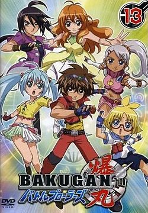Bakugan Battle Brawlers (爆丸バトルブローラーズ Bakugan Batoru Burōrāzu?, no Brasil Bakugan Guerreiros da Batalha) é a primeira temporada da série. Em um dia comum, estranhas cartas começaram a cair do céu, contendo pequenas esferas que se abrem mostrando suas verdadeiras formas, enormes criaturas chamadas Bakugans[3]. Sem saber a verdade, dois jovens, Daniel "Dan" Kuso e Shun Kazami usaram as cartas e as esferas para inventar um jogo com o mesmo nome dos monstros. Ao lado de seus outros amigos, Runo Misaki, Marucho Marukura, Julie Makimoto e Alice Gehabich, os seis formaram um grupo chamado Guerreiros da Batalha.
Postado por Fernando Soethe KesslerMirai Nikki
19/03/2022 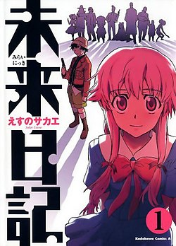Yukiteru é um garoto de 14 anos que poderia ser considerado estranho. Com dificuldade para fazer amigos, para ele a vida não passa de um grande reality show, onde ele é mais um espectador. Tudo que ele vê, resolve anotar em seu celular, fazendo dele seu diário. Mais estranhas ainda são as atitudes do garoto, que tem como amigos imaginários um deus dominador do tempo e espaço, denominado Deus Ex-Machina, e sua assistente, Muru-Muru. No entanto, não era realmente só imaginação… Yukiteru ganha desse deus o poder de prever o futuro com seu celular, tornando-se esse então o seu diário do futuro. No entanto, descobre-se depois que para esse presente há um outro lado: Yukiteru terá que usar seu poder para sobreviver em um jogo envolvendo perigosos assassinos e psicopatas, cada um com um diário do futuro especial em suas mãos, numa disputa para ver quem sucederá Deus Ex-Machina em seu trono.
Postado por Fernando Soethe KesslerRecord of Ragnarok
19/03/2022
A cada 1000 anos, o Conselho dos Deuses se reúne para decidir o destino da humanidade. Após 7 milhões de anos de história humana, os deuses chegam à decisão de que os humanos são irredimíveis e devem ser extintos. No entanto, a valquíria Brunhilde propõe dar à humanidade uma última chance de provar seu valor e os deuses concordam em realizar a batalha de Ragnarok, um torneio com 13 humanos notáveis de toda a história contra 13 dos deuses mais poderosos envolvidos em duelos até a morte. A humanidade será poupada se o seu lado conseguir 7 vitórias na competição. Para equilibrar as probabilidades, cada humano recebe a assistência de uma valquíria que se transforma em uma arma poderosa adaptada ao estilo de combate de seu usuário chamada "Volund", correndo o risco de perder a vida se o usuário for morto.
Postado por Fernando Soethe KesslerCastlevania
19/03/2022 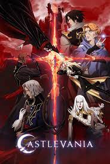Castlevania é uma série de jogos eletrônicos de ação e aventura sombria desenvolvida pela empresa japonesa Konami. A série foi criada no Japão e seu título de estreia foi lançado em 26 de setembro de 1986 para o Famicom Disk System, intitulado Akumajō Dracula.[a]A série é uma das mais famosas franquias de jogos desta empresa e uma das mais vendidas de todos os tempos, com seus títulos se tornando um ponto de referência na criação de jogos de plataforma e ação, originando o subgênero metroidvania. Além de receber vários spin-offs e conversões, a série se expandiu para outras mídias, incluindo comic books e uma série animada da Netflix. A versão Symphony of the Night, o mais aclamado título da série, figura em diversas listas de melhores jogos de todos os tempos, enquanto Super Castlevania IV e Aria of Sorrow são considerados como alguns dos melhores jogos de seus respectivos consoles,a história dos jogos está geralmente ambientada no castelo Castlevania, do Conde Dracula, que é o principal antagonista da série. Inspirado no personagem epônimo do romance de Bram Stoker e na personalidade histórica de Vlad Drakul, o Empalador. Um vampiro e mago, que ressuscita a cada 100 anos e assume o papel de chefe final de quase todos os jogos. A ambientação é em grande parte medieval.
Postado por Fernando Soethe KesslerKakegurui
19/03/2022 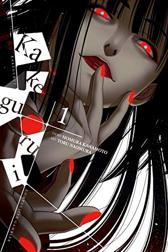A história se passa na Academia Privada Hyakkaou, uma escola de elite de alta classe que abriga os filhos das pessoas mais ricas e influentes do Japão e futuros líderes e profissionais entre o corpo discente. No entanto, a hierarquia do aluno nesta escola não é determinada pelo desempenho acadêmico ou capacidade atlética, mas sim pelas apostas.Os alunos são classificados por suas contribuições monetárias enviadas ao conselho estudantil, aqueles que ganham ganham popularidade, prestígio e conexões, enquanto aqueles que perdem e se endividam e tornam-se escravos, "animais domésticos", apelidado de "Totó" ou "Gata Vira-lata" dependendo do gênero e é identificado com uma etiqueta semelhante a um colar em volta do pescoço.
Postado por Fernando Soethe KesslerMegalo Box
19/03/2022
A série se passa em um cenário futurista, onde cidadãos licenciados vivem em uma cidade rica, enquanto, nos arredores desta cidade, há uma cidade de favela onde cidadãos sem licença vivem no Japão. O Megalo Boxing é um esporte popular neste mundo semelhante ao boxe, exceto que os boxeadores lutam usando uma armação de metal que torna seus ataques muito mais letais. Junk Dog é um jovem que luta em ringues ilegais subterrâneos em brigas que têm um resultado fixo, onde seu treinador Gansaku Nanbu o orienta sobre quando perder uma luta.
Postado por Fernando Soethe KesslerFairy Tail
19/03/2022 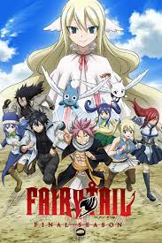A história segue as aventuras de Lucy Heartfilia, uma jovem maga que sonha em se tornar escritora e Natsu Dragneel, um mago adolescente que é membro da popular guilda de feiticeiros Fairy Tail que está a procura do dragão Igneel,Lucy Heartfilia é uma jovem maga de 17 anos que deseja tornar-se uma maga evoluída. Para isso, ela terá que entrar em uma guilda de magos, para ganhar dinheiro para sobreviver e também para aprimorar suas habilidades. Assim sendo, ela chega até a cidade de Hargeon, onde encontra Natsu Dragneel e Happy.
Postado por Fernando Soethe KesslerAngel Beats
19/03/2022 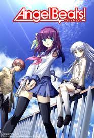Angel Beats! centraliza certa escola localizada em alguma realidade conceitual pós-vida, uma espécie de limbo ou "umbral", do qual todos os alunos já estão mortos e, quando sucumbirem aos seus arrependimentos da vida passada, acabam por reencarnar em um novo corpo com, supostamente, uma nova consciência.Os estudantes convivem normalmente nessa realidade até reencarnarem, sem abdicar dos sentidos comuns ao ser humano e muito menos sentimentos, entretanto, caso acabem "morrendo" nesse mundo, reaparecem ilesos novamente. Todos os alunos possuem lembranças dos anos que viveram, inclusive da própria morte, exceto o protagonista, Yuzuru Otonashi.
Postado por Fernando Soethe Kessler